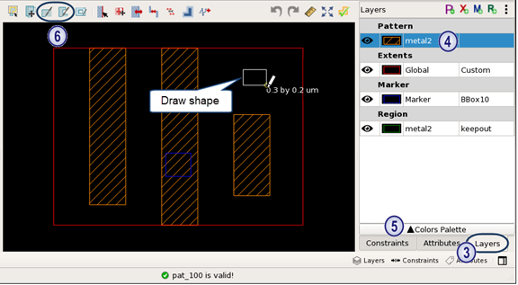

Drawing Shapes with the Pattern Matching GUI
Prerequisites
A pattern library is open in the GUI. See “Invoking the Calibre Pattern Matching GUI”.
Procedure
- Select the layer you want to draw the object
on.
The layer can be a pattern layer, a custom extent layer, a custom marker layer, or a region layer. If you need to add a layer, click the appropriate button in the Layers tab toolbar (
 ,
,  ,
,  , or
, or  )
) - With the
desired layer still selected, click the Create Rectangle (
 ) or Create Polygon (
) or Create Polygon ( ) button and draw a shape. Note:
) button and draw a shape. Note:To draw only Manhattan shapes when drawing polygons, press and hold the Ctrl key while drawing. To set the drawing mode for polygons, choose and choose Arbitrary or Manhattan.
The following image shows drawing a rectangle for the metal2 pattern layer.
Note:Take care with adding non-Manhattan shapes, which may have their length or width snap differently if an edge is off-grid. In addition, non-Manhattan pattern polygon edges should not intersect with pattern extents.
- (Optional)
Do the following to add a hole to a shape:
- Click
the Create Hole button (
 ).
). - Click polygon you want to place the hole in.
- Draw the hole. You can only draw a rectangular hole. To create a non-rectangular hole, draw two or more adjoining or overlapping holes.
- Click
the Create Hole button (
- If needed,
click the Move button (
 ) to
make adjustments to the shapes.
) to
make adjustments to the shapes. To move a polygon, edge, or vertex, click and drag the object. When moving vertexes, the edge connected to the vertex is also moved.
- Click the Check
Pattern button (
 ) to
check that the pattern is legal.
) to
check that the pattern is legal.